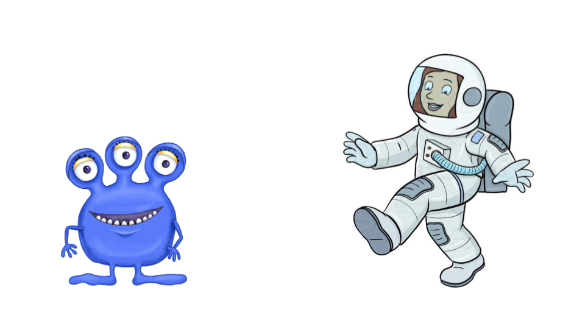
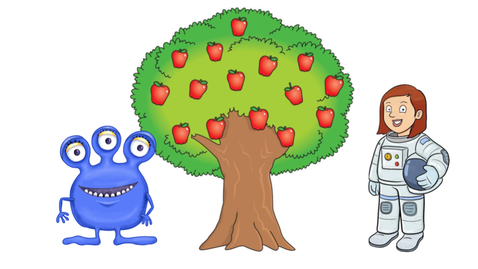
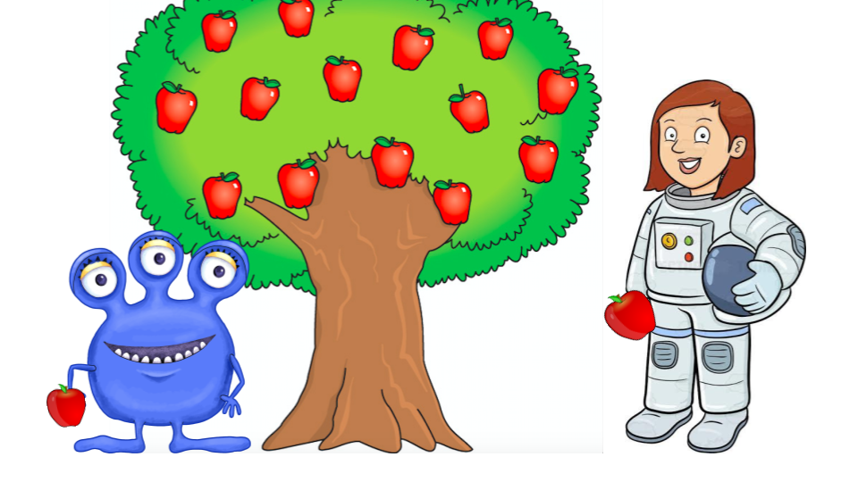
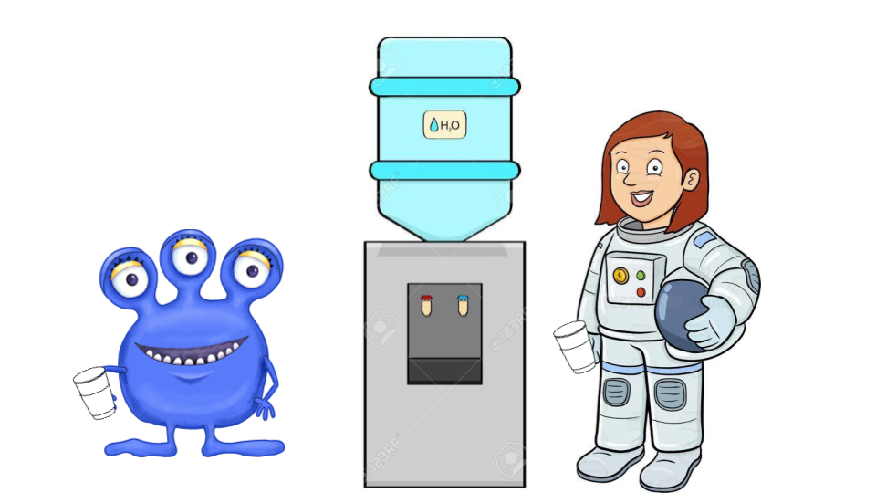

<html>
    <head>
        <title>My experiment</title>
        <script src="jsPsych-master/jspsych.js"></script>
        <script src="jsPsych-master/plugins/jspsych-text.js"></script>
        <script src="jsPsych-master/plugins/jspsych-single-stim.js"></script>
        <script src="jsPsych-master/plugins/jspsych-single-audio.js"></script>
        <script src="jsPsych-master/plugins/jspsych-survey-text.js"></script>
        <link href="jsPsych-master/css/jspsych.css" rel="stylesheet" type="text/css"></link>
    </head>
    <body>
    </body>
    <script>

/*** Index ***/
/* RECORD DATA */
//    - participant ID

/* DETERMINE PARAMETERS */
//    - condition
//    - language
//    - learned words
//    - stimuli pairs

/* BLOCKS */

//    - welcome & consent form V
//    - adjust microphone V
//    - learning instructions V
//    - learning presentation V
//    - learning test instructions V
//    - learning test V
//    - listening instructions V
//    - listening V
//    - test instructions V
//    - tests V
//    - survey V
//    - debrief & code V

/* TIMELINE */

/* RECORD DATA */

/******************************* RECORD DATA ************************************/

    /*
    Record Participant ID from their MTurk id  ******************
    *********** what other things do we want to record?
    */

/************************** DETERMINE PARAMETERS ******************************/
/**************************** condition ******************************/

// Define which condition the participant is assigned to
// Josh will give us code to do this so now it's just set arbitrarily
// This is changed manually for now
    var condition = jsPsych.randomization.sample([0,1], 1); // 0 = nonanchor or 1 = anchor


/*************************** language ********************************/

    /*
    Define which language to use:
      1. Define two list of 8 words, one in each language (A or B)
      2. Randomly generate the version via a sample function returns 0 or 1
      3. Define the operational list of words. If version = 0, wordlist = A, otherwise = B
      4. Define the other language as "nonwords" for later use
    */

    //audio files for language A
    var wordlist_a = [
      "audio/a1.mp3",
      "audio/a2.mp3",
      "audio/a3.mp3",
      "audio/a4.mp3",
      "audio/a5.mp3",
      "audio/a6.mp3",
      "audio/a7.mp3",
      "audio/a8.mp3"
    ];

    //audio files for language B
    var wordlist_b = [
      "audio/b1.mp3",
      "audio/b2.mp3",
      "audio/b3.mp3",
      "audio/b4.mp3",
      "audio/b5.mp3",
      "audio/b6.mp3",
      "audio/b7.mp3",
      "audio/b8.mp3"
    ];

    //audio files for the part words in language A
    var partwordlist_a = [
      "audio/pa1.mp3",
      "audio/pa2.mp3",
      "audio/pa3.mp3",
      "audio/pa4.mp3",
      "audio/pa5.mp3",
      "audio/pa6.mp3",
      "audio/pa7.mp3",
      "audio/pa8.mp3"
    ];

    //audio files for the part words in language B
    var partwordlist_b = [
      "audio/pb1.mp3",
      "audio/pb2.mp3",
      "audio/pb3.mp3",
      "audio/pb4.mp3",
      "audio/pb5.mp3",
      "audio/pb6.mp3",
      "audio/pb7.mp3",
      "audio/pb8.mp3"
    ];

    // randomly select which language to use
    var version = jsPsych.randomization.sample([0,1], 1);

    // depending on the version, define the wordlist and the nonwordlist
    if (version = 0){
      var wordlist = wordlist_a;
      var nonwordlist = wordlist_b;
      var partwordlist = partwordlist_a;
      var stream = "audio/streama.mp3" //This will be changed to the actual stream file
    } else if (version = 1){
      var wordlist = wordlist_b;
      var nonwordlist = wordlist_a;
      var partwordlist = partwordlist_b;
      var stream = "audio/streamb.mp3" //This will be changed to the actual stream file
    };

/************************** learned words ******************************/

    /*
    Defining the words as anchor words or nonanchor words
      1. Randomly select two numbers out of 8
      2. If condition = 0, use these two numbers to determine which nonwords are used in learning
      3. If condition = 1, create an array of words with properties indicating their file name
          and whether they are anchor words or not (default = not anchor word), and
          then use these two numbers to determine which words are used in learning. Change
          their "anchor" property to "true"
    */

    // randomly select two numbers out of eight
    var which_learned = jsPsych.randomization.sample([0,1,2,3,4,5,6,7], 2);

    var words = [
      {file: wordlist[0], anchor: false},
      {file: wordlist[1], anchor: false},
      {file: wordlist[2], anchor: false},
      {file: wordlist[3], anchor: false},
      {file: wordlist[4], anchor: false},
      {file: wordlist[5], anchor: false},
      {file: wordlist[6], anchor: false},
      {file: wordlist[7], anchor: false}
    ];

    // determines what the learned words are depending on the condition
    if (condition == 0) {
      // for the nonanchor condition, the learned words are two nonwords
      // randomly selected from the list of nonwords
      var learned = [
        {file: nonwordlist[which_learned[0]], meaning: "apple"},
        {file: nonwordlist[which_learned[1]], meaning: "water"}
      ]
    } else if (condition == 1){
      // for the anchor condition, the learned words are two of the eight words
      // their identity are recorded in the property .anchor (true for anchor words)
      for(var i=0; i < which_learned.length; i++){
        words[which_learned[i]].anchor = true;
      };

      // determining which words were learned
      // there might be some problem here
      var learned = [
        {file: words[which_learned[0]].file, meaning: "apple"},
        {file: words[which_learned[1]].file, meaning: "water"}
      ]
    };

/************************** pairs of test stimuli ******************************/
// to create a list of the random order of the words
      var orders = [];
      for(i=0; i<16;i++){
        orders.push(0,1);
      }
      orders = jsPsych.randomization.shuffle(orders);

// this is the pairs of the stimuli, the statistical structure is balanced in R
     var test_pairs = [
       {word: words[2].file, partword: partwordlist[7], anchor: words[2].anchor},
       {word: words[7].file, partword: partwordlist[7], anchor: words[7].anchor},
       {word: words[6].file, partword: partwordlist[2], anchor: words[6].anchor},
       {word: words[2].file, partword: partwordlist[6], anchor: words[2].anchor},
       {word: words[7].file, partword: partwordlist[3], anchor: words[7].anchor},
       {word: words[2].file, partword: partwordlist[3], anchor: words[2].anchor},
       {word: words[0].file, partword: partwordlist[4], anchor: words[0].anchor},
       {word: words[4].file, partword: partwordlist[1], anchor: words[4].anchor},
       {word: words[1].file, partword: partwordlist[6], anchor: words[1].anchor},
       {word: words[6].file, partword: partwordlist[3], anchor: words[6].anchor},
       {word: words[3].file, partword: partwordlist[0], anchor: words[3].anchor},
       {word: words[5].file, partword: partwordlist[5], anchor: words[5].anchor},
       {word: words[4].file, partword: partwordlist[4], anchor: words[4].anchor},
       {word: words[7].file, partword: partwordlist[4], anchor: words[7].anchor},
       {word: words[5].file, partword: partwordlist[0], anchor: words[5].anchor},
       {word: words[5].file, partword: partwordlist[2], anchor: words[5].anchor},
       {word: words[0].file, partword: partwordlist[1], anchor: words[0].anchor},
       {word: words[3].file, partword: partwordlist[5], anchor: words[3].anchor},
       {word: words[0].file, partword: partwordlist[6], anchor: words[0].anchor},
       {word: words[5].file, partword: partwordlist[6], anchor: words[5].anchor},
       {word: words[1].file, partword: partwordlist[2], anchor: words[1].anchor},
       {word: words[6].file, partword: partwordlist[0], anchor: words[6].anchor},
       {word: words[3].file, partword: partwordlist[1], anchor: words[3].anchor},
       {word: words[2].file, partword: partwordlist[2], anchor: words[2].anchor},
       {word: words[4].file, partword: partwordlist[5], anchor: words[4].anchor},
       {word: words[7].file, partword: partwordlist[5], anchor: words[7].anchor},
       {word: words[0].file, partword: partwordlist[0], anchor: words[0].anchor},
       {word: words[6].file, partword: partwordlist[7], anchor: words[6].anchor},
       {word: words[1].file, partword: partwordlist[1], anchor: words[1].anchor},
       {word: words[4].file, partword: partwordlist[3], anchor: words[4].anchor},
       {word: words[1].file, partword: partwordlist[7], anchor: words[1].anchor},
       {word: words[3].file, partword: partwordlist[4], anchor: words[3].anchor}
     ];

// this is the array with the order of the partword vs. word randomized
// this will be used in the final test block
     var actual_stimuli = [];

     // basically if order is 0 then the first word is the word and the second word is part word
     // and vice versa
     for(var i=0; i < test_pairs.length; i++){
       var s = {};
       var wordfirst;
       if (orders[i] == 0){
         s.first = test_pairs[i].word;
         s.second = test_pairs[i].partword;
         wordfirst = true;
       } else if (orders[i] == 1){
         s.first = test_pairs[i].partword;
         s.second = test_pairs[i].word;
         wordfirst = false
       };
       s.data = {is_anchor: test_pairs[i].anchor, wordfirst: wordfirst, condition: condition, version: version}
       actual_stimuli.push(s); // these are the data that can be pulled from the test trials
     };

     // uncomment the below code for a much shorter test array for debugging purposes
     //var mock_stimuli = actual_stimuli.slice(0,2);

/******************************* THE BLOCKS ************************************/

/* define consent form block */ //Checked
     var welcome = {
        type: "text",
        cont_key:["spacebar"],
        text: "<p>Welcome to the experiment!</p><p>Press the " +
              "<strong>spacebar</strong> to proceed.</p>"
     };

     var consent = {
       type: "text",
       cont_key:["spacebar"],
       text:"<p>This experiment is being conducted at Vassar College. Participants "+
       "will view pictures, listen to sounds, and then answer simple questions about "+
       "the sounds. Participation poses minimal risk, meaning the risk is no " +
       "greater than that of normal, everyday activities. There are no known " +
       "benefits for participation. Your anonymous data, identified only by your " +
       "Mechanical Turk worker ID, will be used for research purposes. " +
       "For your participation, you will receive a small payment of $____ upon " +
       "completion of the experiment. You are free to stop the experiment by closing " +
       "your browser window at any time. If you have any questions, you can contact " +
       "Professor Jan Andrews at andrewsj@vassar.edu.</p><p> By pressing the spacebar " +
       "to proceed to the next page, you affirm that you understand the information in "+
       "this consent form, that you voluntarily agree to participate in this study, and " +
       "that you are at least 18 years of age, which is the minimum age to " +
       "participate in this study.</p><p>Press <strong>spacebar</strong> to consent and proceed.</p>"
     };

/* define adjust volume block*/ //Checked
      var adjust_audio = {
        type: "single-audio",
        stimulus: "audio/checkvolume.mp3",
        choices: ["k"],
        prompt: "<p>A test audio will be played repeatedly during this screen. </p>" +
                "<p>Please check whether your computer is playing sound correctly, " +
                "and adjust the volume so you can hear the sentence clearly. </p>" +
                "<p>Follow the audio instruction to proceed.</p>"
      };

/* define learning instructions block */ //Checked
      var learning_instructions = {
        type: "text",
        cont_key: ["spacebar"],
        text: "<p>You will now see a short slideshow.</p>" +
        "<p>Please pay close attention, as you will be asked to recall the" +
        " information presented to you. </p> <p>Once the experiment begins, " +
        "<strong>please do not click outside this page or open a new browser window.</strong></p>"+
        "<p></p><p>Press <strong>spacebar</strong> to proceed.</p>"
      };

/* define learning blocks */

      /* the narrated slides */
      var slides = {
        type: "single-audio",
        choices: jsPsych.NO_KEYS,
        trial_ends_after_audio: true,
        timeline: [
          {stimulus: "audio/slide1.mp3", prompt:"</img>"},
          {stimulus: "audio/slide2.mp3", prompt:"</img>"},
          {stimulus: "audio/slide3a.mp3", prompt:"</img>"},
          {stimulus: learned[0].file, prompt:"</img>"},
          {stimulus: "audio/slide3b.mp3", prompt:"</img>"},
          {stimulus: learned[0].file, prompt:"</img>"},
          {stimulus: "audio/slide3c.mp3", prompt:"</img>"},
          {stimulus: learned[0].file, prompt:"</img>"},
          {stimulus: "audio/slide3d.mp3", prompt:"</img>"},
          {stimulus: "audio/slide4a.mp3", prompt:"</img>"},
          {stimulus: learned[1].file, prompt:"</img>"},
          {stimulus: "audio/slide4b.mp3", prompt:"</img>"},
          {stimulus: learned[1].file, prompt:"</img>"},
          {stimulus: "audio/slide4c.mp3", prompt:"</img>"},
          {stimulus: learned[1].file, prompt:"</img>"},
          {stimulus: "audio/slide4d.mp3", prompt:"</img>"}
        ]
      };

      /* define learning test instructions block */
      var learning_test_instructions = {
        type: "text",
        cont_key: ["spacebar"],
        text: "<p>You will now hear some words from the alien language.</p>" +
        "<p>Please listen carefully, and type the English meaning of the word in the box" +
        " below, using all <strong>lowercase</strong> letters.</p>" +
        "<p></p><p>Press <strong>spacebar</strong> to proceed.</p>",
      };

      // make them into a timeline so it makes more sense
      var learning_presentation_timeline = {
        timeline: [slides, learning_test_instructions]
      };

      // These keep track of whether an answer is correct
      var a_correct = true;
      var b_correct = true;
      // These keep track of how many times they've gotten it wrong
      var a_incorrect = 0;
      var b_incorrect = 0;

      /* define learning test block */

      // to randomize the order of the two learned words
      var learned_order = jsPsych.randomization.sample([0,1], 2);
      var test_learned = [
        {file: learned[learned_order[0]].file, meaning: learned[learned_order[0]].meaning},
        {file: learned[learned_order[1]].file, meaning: learned[learned_order[1]].meaning}
      ];


      // stimuli for word a
      var learning_test_a = {
        type: "single-audio",
        stimulus: test_learned[0].file,
        choices: jsPsych.NO_KEYS,
        trial_ends_after_audio: true
      };

      // question for word a
      var learning_question_a = {
        type: "survey-text",
        questions: ["What does this alien word mean? Use all lowercase letters."],
        // determine whether the answer is
        on_finish: function(data) {
          if (JSON.parse(data.responses).Q0 === test_learned[0].meaning){
          } else {
            a_correct = false;
          }
        }
      };

      // the correct trial
      var correct_a = {
        type: "text",
        cont_key: ["spacebar"],
        text: "<p>Correct!</p><p></p><p>Press <strong>spacebar</strong> to proceed.</p>"
      };

      // the incorrect trial
      var incorrect_a = {
        type: "text",
        cont_key: ["spacebar"],
        text: "<p>Incorrect.</p><p></p><p>Press <strong>spacebar</strong> to try again.</p>"
      };

      // the conditional for correct
      var if_correct_a = {
        timeline: [correct_a],
        conditional_function: function(){
          if (a_correct == true){
            return true;
          } else {
            return false;
          }
        }
      };

      // the conditional for incorrect
      var if_incorrect_a = {
        timeline: [incorrect_a],
        conditional_function: function(){
        if (a_correct == false && a_incorrect < 3){
            return true;
          } else {
            return false;
          }
        }
      };

      // putting them in the same timeline so it makes more sense
      var learning_a_questions = {
        timeline: [learning_test_a, learning_question_a, if_correct_a, if_incorrect_a]
      };

      // loop from the beginning of learning_a_questions
      // reset a_correct
      var loop_test_a = {
        timeline: [learning_a_questions],
        loop_function: function(){
          if (!a_correct && a_incorrect < 3){
            a_correct = true;
            a_incorrect = a_incorrect + 1;
            return true;
          } else {
            return false;
          }
        }
      };

      ///////// the test for the second word
      // if there are more than 3 error from a, then don't even bother running b

      var learning_test_b = {
        type: "single-audio",
        stimulus: test_learned[1].file,
        choices: jsPsych.NO_KEYS,
        trial_ends_after_audio: true,
        //prompt: "<p>What does this alien word mean?</p>"
      };

      // the question for the second word
      var learning_question_b = {
        type: "survey-text",
        questions: ["What does this alien word mean? Use all lowercase letters."],
        on_finish: function(data) {
          if (JSON.parse(data.responses).Q0 === test_learned[1].meaning){
          } else {
            b_correct = false;
            b_incorrect = b_incorrect + 1;
          }
        }
      };

      // the correct trial
      var correct_b = {
        type: "text",
        cont_key: ["spacebar"],
        text: "<p>Correct!</p><p></p><p>Press <strong>spacebar</strong> to proceed.</p>"
      };

      // the incorrect trial
      var incorrect_b = {
        type: "text",
        cont_key: ["spacebar"],
        text: "<p>Incorrect.</p><p></p><p>Press <strong>spacebar</strong> to try again.</p>"
      };

      // the conditional for correct
      var if_correct_b = {
        timeline: [correct_b],
        conditional_function: function(){
          if (b_correct == true){
            return true;
          } else {
            return false;
          }
        }
      };

      // the conditional for incorrect
      var if_incorrect_b = {
        timeline: [incorrect_b],
        conditional_function: function(){
        if (b_correct == false && b_incorrect < 3){
            return true;
          } else {
            return false;
          }
        }
      };

      // put these all into one timeline
      var learning_b_questions = {
        timeline: [learning_test_b, learning_question_b, if_correct_b, if_incorrect_b]
      };

      // loop from the beginning of learning_a_questions
      // reset a_correct
      var loop_test_b = {
        timeline: [learning_b_questions],
        conditional_function: function(){
          if (a_incorrect < 3){
            return true;
          } else {
            return false;
          }
        },
        loop_function: function(){
          if (b_correct == false && b_incorrect < 3){
            b_correct = true;
            return true;
          } else {
            return false;
          }
        }
      };

      // if incorrect for more than 3 times
      var incorrect_much = {
        type: "text",
        cont_key: ["spacebar"],
        text: "<p>Incorrect.</p><p>You have answered incorrectly for too many times.</p><p>Press <strong>spacebar</strong> to see the slideshow again.</p>"
      };

      // loop from the top of test a


      // the conditional for if incorrect for more than 3 times
      var if_incorrect_much = {
        timeline: [incorrect_much],
        conditional_function: function(){
          if (a_incorrect >= 3 || b_incorrect >= 3){
            return true;
          } else {
            return false;
          }
        }
      };

      var meta_learning_timeline = {
        timeline: [learning_presentation_timeline, loop_test_a, loop_test_b, if_incorrect_much]
      };

      // loop the whone thing from the slides
      var loop_learning = {
        timeline: [meta_learning_timeline],
        loop_function: function(){
          if(a_incorrect >= 3 || b_incorrect >= 3){
            a_incorrect = 0;
            b_incorrect = 0;
            a_correct = true;
            b_correct = true;
            return true
          } else {
            return false
          }
        }
      };

/* define listening instructions block */ //Checked
      var listening_instructions = {
        type: "text",
        cont_key: ["spacebar"],
        text: "<p>Now you will hear a continuous stream of the alien language.</p>" +
        "<p>You will be asked to recall some of the information you hear after the stream is over. </p>" +
        "<p>Please listen carefully, as you will not be able to listen to the stream again.</p>" +
        "<p>   </p><p>Press <strong>spacebar</strong> to proceed.</p>"
      };

/* define listening block */ //Checked
      var listening = {
        type: "single-audio",
        stimulus: stream,
        choices: jsPsych.NO_KEYS,
        trial_ends_after_audio: true
      };

/* define testing instructions block */ //Checked
      var testing_instructions = {
        type: "text",
        cont_key: ["spacebar"],
        text: "<p>You will now be tested on the words you just heard. In each question, you will hear two" +
        " strings of syllables.</p><p>You will be asked to determine which sounds like a word in the alien language.</p>" +
        "<p>Press <strong>“1”</strong> for the first string, and press <strong>“2”</strong> for the second string." +
        "<p>Please listen carefully, as the audio will not be repeated.</p>" +
        "<p></p><p>Press <strong>spacebar</strong> to proceed.</p>"
      };

/* define testing block */
      var test_procedure = {
        timeline_variables: actual_stimuli,//actual_stimuli,
        timeline: [
        {// the first word
            type: 'single-audio',
            stimulus: jsPsych.timelineVariable('first'),
            choices: jsPsych.NO_KEYS,
            trial_ends_after_audio: true
        },

        {// the second word
            type: 'single-audio',
            stimulus: jsPsych.timelineVariable('second'),
            choices: jsPsych.NO_KEYS,
            trial_ends_after_audio: true
        },

        {// record data
            type: 'single-stim',
            stimulus: "<p>Which sounded more like a word in the alien language?</p>" +
            "<p>Press <strong>“1”</strong> for the first, and press <strong>“2”</strong> for the second.",
            choices:["1","2"],
            is_html: true,
            data: jsPsych.timelineVariable('data'),
            on_finish: function(trial_data){
                // if wordfirst is true then 1 would be correct, and vice versa
                //if (jsPsych.timelineVariable('wordfirst') == true){
                var correct_response = trial_data.wordfirst ? '1' : '2';
                trial_data.correct = (trial_data.key_press == jsPsych.pluginAPI.convertKeyCharacterToKeyCode(correct_response));

                  //} else if (jsPsych.timelineVariable('wordfirst') == false){
                  //  var correct = (trial_data.key_press == jsPsych.pluginAPI.convertKeyCharacterToKeyCode('2'));
                  //  jsPsych.data.addDataToLastTrial({correct: correct})
                  //};


                //jsPsych.data.addDataToLastTrial({subject: subjectID});     // This code probably isn't right
                //jsPsych.data.addDataToLastTrial({condition: condition});
              }
            }
          ],
    // Is there a simpler and cleaner way to do this???
    // like "timeline_variables: actual_stimuli"???
    randomize_order: true
};

/* define survey block */ //Checked
      var demographic_survey = {      //we can change/add the types to be multiple choices and stuff
        type: "survey-text",
        preamble: "Demographic Survey",
        questions: ["Which year were you born?","What is your gender?",
        "How many hours have you spent doing HITs on Mechanical Turk in the past 7 days?",
        "Did you experience any technical difficulties completing the experiment (e.g., some or all of the experiment did not work)?"]
      };

/* define debrief block */ /*text, make sure mouse is enabled*/ // Checked
      var debrief = {
        type: "text",
        cont_key: ["k"], //&&&This is just for my own convenience we'll take it out once the experiment is working
        text: "<p>Thank you for your time! This experiment aimed to measure " +
        "how effective learned words are in segmenting words in a speech stream" +
        " while learning a new language. We appreciate your participation!</p>" +
        "<p>Please copy the following code.</p><p><strong>INSERT CODE</strong></p><p>" +
        " You will need this code later in order to indicate your completion of the study.</p>" +
        "<p>After you have copied the code, you are free to leave this page and " +
        "return to the Mechanical Turk website.</p><p>Thank you!</p>"
      };

/******************************* TIMELINE ************************************/

      var timeline = [];
      timeline.push(welcome);
      timeline.push(consent);
      timeline.push(adjust_audio);
      timeline.push(learning_instructions);
      timeline.push(loop_learning);
      timeline.push(listening_instructions);
      timeline.push(listening);
      timeline.push(testing_instructions);
      timeline.push(test_procedure);
      timeline.push(demographic_survey);
      timeline.push(debrief);

      /* start the experiment */
      jsPsych.init({
        timeline: timeline,
        preload_audio: [].concat(wordlist_a, wordlist_b, partwordlist_a, partwordlist_b),
        on_finish: function() {
          jsPsych.data.displayData();
        }
      });
    </script>
    </html>
